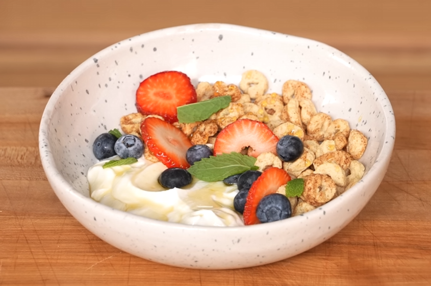

Protein Cereal Bowl


Description
A healthy 340 calorie smashburger with 5g of fat, 33g of protein, and 39g of carbs. An essential for anyone looking to go on a diet while still eating well.
Ingredients
- 1x 5.3oz (150g) container of Ratio protein yogurt
- 1 cup (35g) Three Wishes Cinnamon Style Cereal
- ½ tablespoon (10g) honey
- 2 strawberries, cut into rounds or quarters
- 8-10 blueberries
- Mint, for garnish
Steps
- To a medium-sized bowl, add your protein yogurt on one side. On the other side, place your cereal. Drizzle the honey across the whole bowl then top with strawberries and blueberries. Garnish with mint leaves. Serve and enjoy.